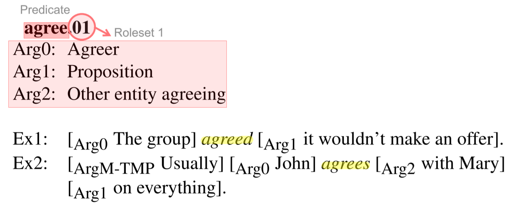

标注逻辑¶

- 目标：为句子中的成分标注其语义角色；
- 方法：以谓词 Predicate 为中心，根据谓词的语境义选择对应的角色集 Roleset，再查阅角色集对句子中的语义成分进行参数 Argument 标注。
谓词 Predicate¶
描述客体性质、特征或者客体之间关系的词项，可以理解为“主题词”或“关系词”；不一定为谓语动词，也可以名词、动名词形容词或词组的形态出现。
例如，right 作为名词的角色集如下所示：
| 参数 | 释义 |
|---|---|
| ARG1-PPT | entity with a right |
| ARG2-GOL | what they have a right to |
角色集 Roleset¶
一个谓词可能对应多个语义，一个语义可以限定一组语义角色（编号参数）集合，我们称之为“角色集”。每个谓词至少拥有一个角色集，标注者需要进行角色集选择。
例如，help 的两个角色集如下所示（不包括 helpful 等衍生词的角色集）：
| 参数 | 释义 |
|---|---|
| ARG0-PAG | helper |
| ARG1-PPT | project |
| ARG2-GOL | benefactive, secondary agent (when separate from arg1) |
例句：The stocks of banking concerns weren't helped much by the announcement.
| ARG1 | ARGM-NEG | REL | ARGM-EXT | ARG0 |
|---|---|---|---|---|
| The stocks of banking concerns | n't | helped | much | by the announcement |
| 参数 | 释义 |
|---|---|
| ARG0-PAG | agent |
| ARG1-PPT | thing (not) avoided |
例句：I can't help but wonder why.
| ARG0 | ARGM-MOD | ARGM-NEG | REL |
|---|---|---|---|
| I | ca | n't | help |
参数 Argument¶
语义角色的分类标签，包括编号参数（Numbered Arguments）和修饰参数（ARG-M）。
编号参数 Numbered Arguments¶
反映需要与谓词搭配的特定元素，或通常与谓词一起出现的成分，例如一个动作的发出者、接收者和受益者，动作的起始点、终止点等。通常而言，ARG0是原型动因（Prototypical Agent），ARG1 是原型受动者（Prototypical Patient）或者主题（Theme）。角色集就是编号参数的集合，可以理解为谓词某一用法下的语义主干单元。常见的编号参数以及常见用途如下表所示：
| 标签 | 常见用途 |
|---|---|
| ARG0 | 动因 Agent |
| ARG1 | 受动者 Patient |
| ARG2 | 工具 Instrument、受益者 Benefactive、属性 Attribute 等 |
| ARG3 | 起点 Starting Point、受益者 Benefactive、属性 Attribute 等 |
| ARG4 | 终点 Ending Point 等 |
通常每个角色集都针对其应用场景定义了所有相关的编号参数，但在极少数情况下，一个谓词在句中可能对应超过一个动因，但相关义项的角色集只定义了其中一个。此时，可以用 ARGA 表示剩余的所有原型动因。
修饰参数 Modifier¶
编号参数组成主干语义，而修饰参数对谓词进行功能性修饰。一般是不同功能的定语或状语修饰语，如下表所示。
| 标签 | 注释 |
|---|---|
| ARGM-ADJ | 通用形容词 Adjective |
| ARGM-ADV | 通用副词 Adverb |
| ARGM-CAU | 起因 Cause |
| ARGM-COM | 共格者 Comitative |
| ARGM-CXN | 形容词结构 Construction |
| ARGM-DIR | 方向 Directional |
| ARGM-DIS | 连接词 Discourse |
| ARGM-EXT | 范围 Extent |
| ARGM-GOL | 目标 Goal |
| ARGM-LOC | 地点 Locative |
| ARGM-LVB | 轻动词 Light verb |
| ARGM-MNR | 方式 Manner |
| ARGM-MOD | 情态动词 Modal |
| ARGM-NEG | 否定词 Negation |
| ARGM-PRD | 第二谓语 Secondary Predication |
| ARGM-PRP | 动机 Purpose |
| ARGM-REC | 反身词 Reciprocal |
| ARGM-TMP | 时间 Temporal |
注：类别标签的详细说明与用例请查阅修饰参数用例。